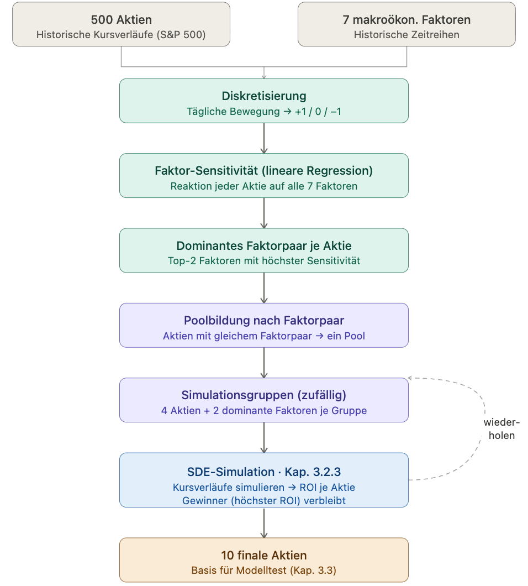
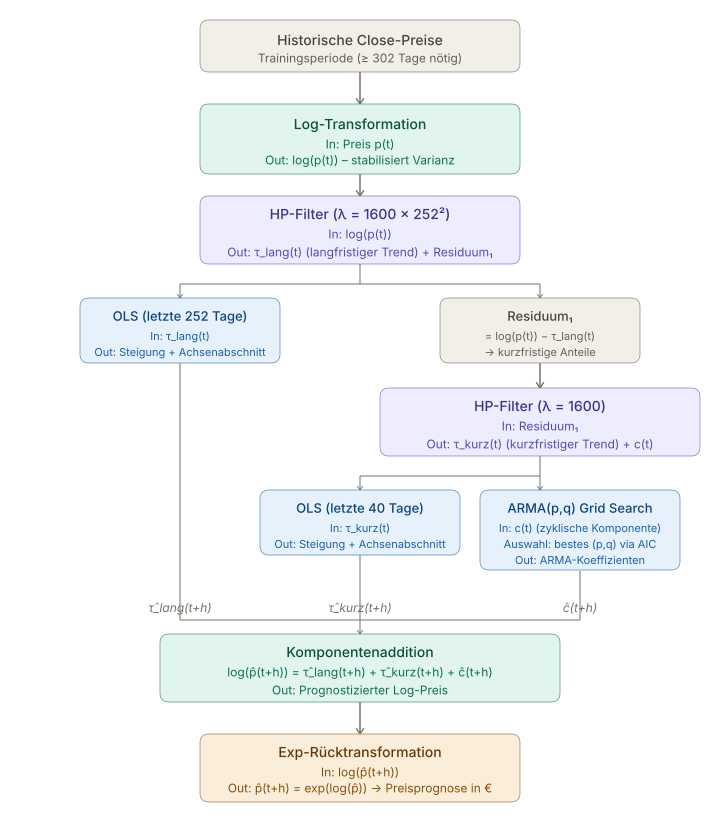
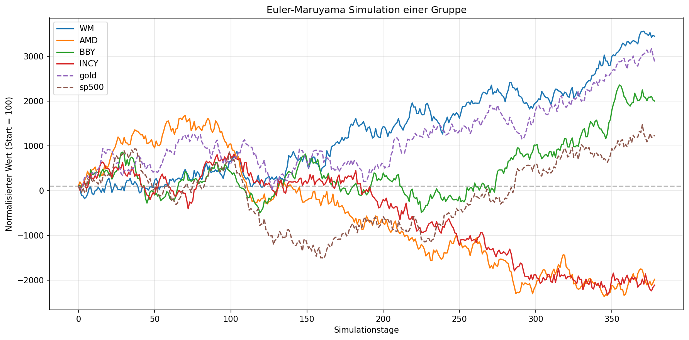

Modellierung des Einflusses makroökonomischer Faktoren
Monte-Carlo-Simulation mit Euler-Maruyama
Makrofaktoren
Ölpreis (NYMEX)
Goldpreis (COMEX)
10-Jahre-Staatsanleihe
S&P 500 Index
US-Dollar Index (DXY)
10-Jahre Break-Even-Inflation
Ablauf der SDE-Aktienauswahl

Modellkonzeption
3 Modellansätze
LinearSeparation
Zerlegung in Trend, Zyklus, Residuum
Lineare Modelle für jeden Teil
Preprocessed SVR
Support Vector Regression
Feature Engineering & Normalisierung
StockTimesFM
Foundation Model für Zeitreihen
Transfer Learning auf Aktiendaten
Datensplit
Training (60%): 01.2020–12.2023
Validierung (10%): 01.2024–06.2024
Test (30%): 07.2024–12.2025
Handelsstrategie
Signalgenerierung
Schwellenwert ε basiert auf MAE
Kaufsignal: Vorhersage > Aktueller Preis + ε
Verkaufssignal: Vorhersage < Aktueller Preis - ε
Halten: |Differenz| ≤ ε
Parameter
Startkapital: $100.000
Position Size: 95% des Kapitals
Forecast Horizon: 1 Tag
Walk-Forward-Validierung
Keine Transaktionskosten
LinearSeparation: Datenfluss

SDE Ergebnisse: Dominante Faktorpaare
Für jede Aktie wurde das Faktorpaar mit dem höchsten Einfluss auf die Kursbewegung ermittelt
Top Beta-Summen
Ticker
Faktor 1
Faktor 2
Σ|β|
MSFT
Staatsanleihe
S&P500
0,661
TEL
Gold
S&P500
0,656
MCO
Staatsanleihe
S&P500
0,647
ACN
Staatsanleihe
S&P500
0,641
TXN
Öl
S&P500
0,638
AAPL
Staatsanleihe
S&P500
0,628
AMP
Staatsanleihe
S&P500
0,628
APA
Öl
S&P500
0,626
Verteilung der Faktorpaare
Faktorpaar
Anzahl
Anteil
Staatsanleihe, S&P500
179
39,8%
Dollar, S&P500
139
30,9%
Öl, S&P500
86
19,1%
Gold, S&P500
30
6,7%
Inflation, S&P500
14
3,1%
Gold, Öl
2
0,4%
Gesamt
450
100%
Monte-Carlo-Simulation

Euler-Maruyama Simulation einer Gruppe mit Faktoren Gold und S&P 500
100 Simulationen über 378 Handelstage (Testzeitraum)
Ergebnisse: Ausgewählte Aktien
Rang
Ticker
Unternehmen
Branche
Faktorpaar
1
CARR
Carrier Global Corp.
Industrie
Öl, Gold
2
OTIS
Otis Worldwide Corp.
Industrie
Öl, Gold
3
RSG
Republic Services Inc.
Abfallentsorgung
Inflation, S&P500
4
CTAS
Cintas Corp.
Dienstleistungen
Dollar, S&P500
5
AJG
Arthur J. Gallagher & Co.
Versicherungen
Dollar, S&P500
6
PEP
PepsiCo Inc.
Konsumgüter
Staatsanleihe, S&P500
7
TT
Trane Technologies
Industrie
Dollar, S&P500
8
GWW
W.W. Grainger Inc.
Handel
Öl, S&P500
9
RMD
ResMed Inc.
Medizintechnik
Inflation, S&P500
10
BLK
BlackRock Inc.
Finanzdienstleistungen
Staatsanleihe, S&P500
Ergebnisse LinearSeparation: Fehlermaße
Ticker
MAPE (%)
OOS-R²
Directional Accuracy
ε (%)
CARR
1,53
-0,08
0,47
1,58
OTIS
1,02
-0,14
0,48
1,37
RSG
0,83
-0,06
0,56
2,28
CTAS
1,01
-0,07
0,55
1,34
AJG
1,13
-0,15
0,53
1,38
PEP
0,97
-0,07
0,48
2,32
TT
1,26
-0,10
0,50
2,45
GWW
1,09
-0,10
0,48
0,44
RMD
1,30
-0,13
0,53
2,76
BLK
1,15
-0,09
0,55
1,46
Ø
1,13
-0,10
0,51
1,74
Interpretation: MAPE ~1% zeigt gute Punktgenauigkeit. Negative R² bedeutet: Modell schlechter als Random Walk.
Directional Accuracy 51% knapp über Zufall.
Ergebnisse LinearSeparation: Trading-Performance
Ticker
Return (%)
Buy & Hold (%)
Excess Return (%)
Sharpe Ratio
Max Drawdown (%)
CARR
-7,00
-12,29
+5,29
-0,36
26,46
OTIS
-21,02
-4,88
-16,14
-27,93
24,44
RSG
19,93
13,11
+6,82
1,08
8,55
CTAS
-3,46
11,02
-14,48
-0,76
23,58
AJG
19,00
2,30
+16,70
2,49
9,95
PEP
-13,00
-6,47
-6,52
-5,06
18,21
TT
4,49
23,33
-18,83
0,07
18,33
GWW
0,50
15,40
-14,90
-0,08
25,05
RMD
8,87
31,79
-22,92
0,52
9,42
BLK
32,28
42,86
-10,58
1,70
11,79
Ø
4,06
11,62
-7,56
-2,83
17,58
Highlights: 3 von 10 Aktien mit positiver Excess-Rendite. AJG: +16,7% Outperformance.
Beobachtungen: SVR liefert beste Ergebnisse. Alle Modelle lernen, sich am Vortagespreis zu orientieren →
starke Glättung. Gute Fehlermaße garantieren keine überlegene Trading-Performance.